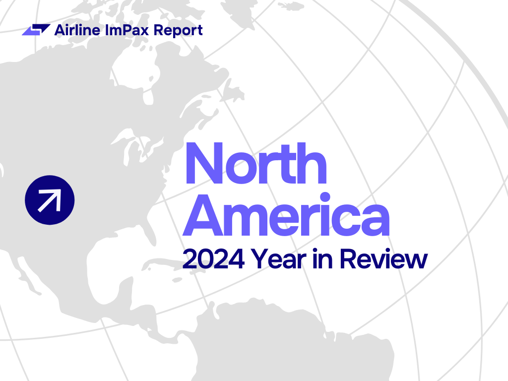

What the 2024 Data Reveals About Passenger Experience and Airline Performance

Despite signs that airlines in North America worked to reduce passenger impact, the region still accounted for nearly 30% of all major disruptions while operating just 25% of global flights. Home to just 36 airlines, the region was responsible for 108 million passengers impacted by medium or major delays or cancellations.
Asia Pacific operated 36.5% of all planned flights worldwide – more than any other region. With such a significant share of global operations, even minor disruptions can have big consequences. This helps put APAC’s average ImPax percentage of 7.7% – slightly higher than the global average of 6.7% – into perspective. In total, the region accounted for 43.5% of all disrupted passengers globally.
Europe performed strongly in 2024, with an ImPax percentage lower than the global average, indicating fewer disruptions that meaningfully impacted passengers. Despite operating roughly a quarter of global flights, Europe was responsible for less than 20% of medium or major delays or cancellations.
The LATAM region maintained steady disruption performance in 2024, with an ImPax percentage that hovered around 5% for the entirety of the year. Compared to the global average, LATAM showed notably less volatility. Although the region operated 6.3% of global scheduled flights, it accounted for only 4% of all significant disruptions.
The Middle East & Africa posted the lowest ImPax percentage of any region in 2024 – and was the only region to average below 5% for the year. Its strong performance is further underscored by passenger impact: while the region carried 8% of global passengers, it accounted for just 5% of those affected by medium or major delays or cancellations.